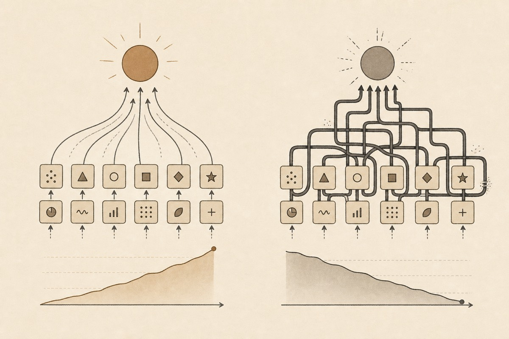
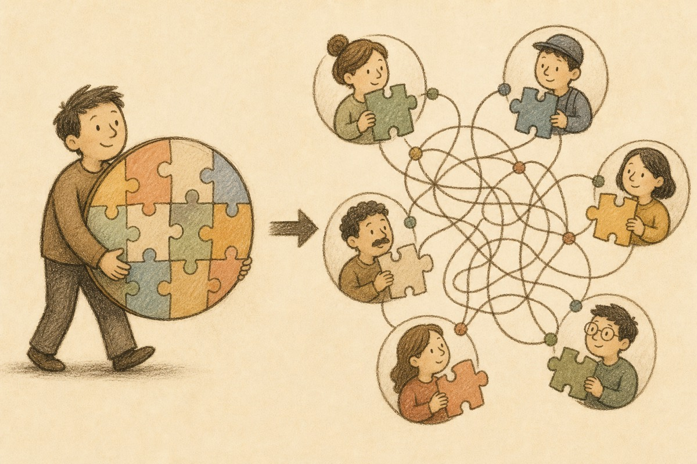
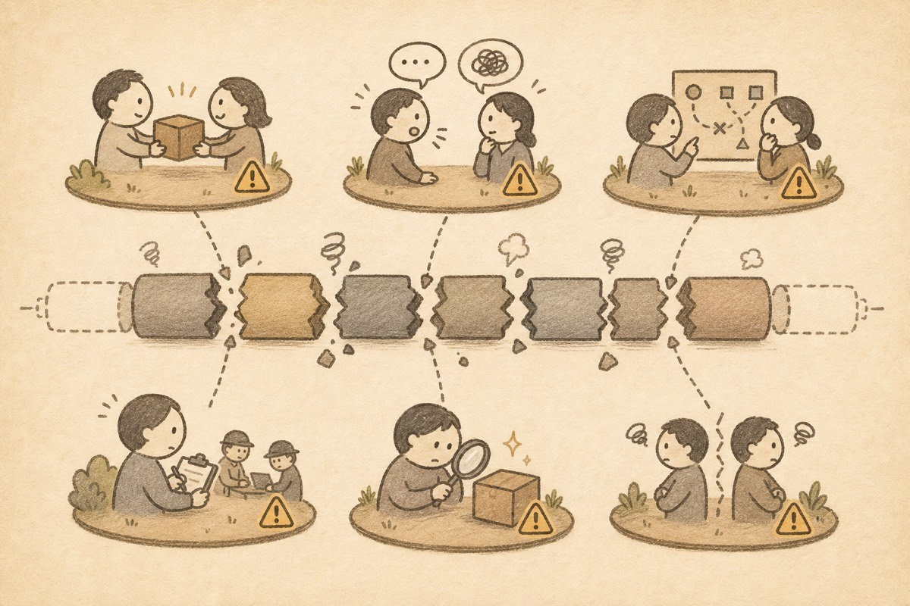

第二章 / 共六章
分工收益与摩擦成本
把被长期压在背景里的交接、沟通、对齐、监督和责任划分重新摊开。
第二章

《分工之后》第二章
第二章：分工收益与摩擦成本的矛盾。
第一章替旧理论辩护，说明了分工为什么在过去极其成立；这一章则要把另一面补上。因为如果我们只看到分工带来的效率，而看不到它同时制造的代价，那么后面对 Agent 时代组织形态的讨论就会失去真正的支点。问题从来不是分工有没有价值。更关键的是：分工的价值究竟以什么代价实现，这些代价又会在什么条件下反过来吞噬收益。
这件事必须说得更准确一些。分工从来不意味着“把一个复杂问题拆开之后，复杂性就消失了”。复杂性并没有消失，它只是从单个人的内部能力要求，转移到了不同岗位、不同环节、不同组织之间的连接处。一个任务切得越开，系统就越需要把这些被切开的部分重新拼起来。于是，交接、沟通、对齐、监督、验收与责任划分，不是分工之外的偶然附带问题，而恰恰是分工的必然后果。
因此，这一章真正要讨论的，不是“协调重不重要”这个抽象问题。更具体的一步是：协调为什么会出现？答案正是因为分工先出现了。分工越深，接口越多；接口越多，摩擦就越难避免。过去这些摩擦长期没有成为主角，原因不在于它们不存在；分工收益太高，足以覆盖它们。可一旦收益结构变化，过去被压住的成本就会重新浮上来。
一、分工没有消灭复杂性，它只是把复杂性转移了

任何一个稍微复杂一点的生产过程，都包含理解、判断、执行、检查、修正和整合等多个层面。所谓分工，本质上是把这些原本可能缠绕在同一个行动者身上的复杂性拆开，分配给不同的人长期承担。这样做的好处，第一章已经讨论过了；但它的代价在于，原本由一个人内部完成的衔接，现在必须在多人之间完成。
这意味着，分工没有把复杂性从世界中删掉。它只是把复杂性从“人内部的问题”转化成“人和人之间的问题”。原来一个熟练工人脑中的连贯判断，现在可能被拆成设计部门的方案、执行部门的操作、质检部门的标准、管理部门的审批和客户侧的反馈。每一个局部都可以更专门，但整体要重新闭合，就必须经过额外的连接工作。
这里有一个常被忽略的事实：一个系统能否高效，既取决于局部环节能不能做得更快，也取决于这些局部能不能低成本地重新拼成整体。分工的收益发生在“每一段更专门”，而分工的成本则发生在“这些段与段之间如何连起来”。现代组织里大量看上去并不直接生产价值的工作，例如开会、写说明、做汇报、追进度、对需求、补文档、走审批，恰恰都是在处理这些连接问题。
所以，协调不是与分工并列的另一个起点。它更像是分工被推深之后必然长出来的一层组织壳。只要任务被拆开，协调就不会消失；差别只在于，这种协调成本是低到几乎可以忽略，还是高到足以反过来压住分工收益。
二、分工一旦发生，摩擦成本就会同步产生

一项任务从一个人独立完成，变成由多个人接力完成，中间至少会多出六类典型成本。
第一类，是交接成本。上一环节必须把自己做了什么、做到什么程度、还有哪些未完成事项传递给下一环节。只要发生交接，就会有信息遗漏、语义压缩和上下文损失。一个人在脑中可以连续把握的问题，一旦跨岗位传递，就必须被翻译成对方看得懂、接得住的形式。
第二类，是沟通成本。分工之后，每个人掌握的只是局部知识，于是局部之间必须不断解释彼此的需求和限制。设计要向研发说明意图，研发要向测试说明边界，测试要向产品说明问题，管理者又要把多方信息整合回一个决策。沟通远不只是“说几句话”，它实际消耗的是注意力、时间和理解力。
第三类，是对齐成本。即便大家都在沟通，也不意味着目标天然一致。不同岗位衡量好坏的标准往往不同：有人看速度，有人看质量，有人看预算，有人看风险，有人看局部 KPI。分工越深，局部视角越强，整体目标就越容易被切碎。于是组织需要不断额外投入资源，去保证局部最优不会偏离整体方向。
第四类，是监督成本。既然每个环节都不再由同一个行动者亲自完成，组织就必须确认每个环节是否按预期履约。监督的功能也不止是防止偷懒，它还要降低信息不对称，确认质量，减少因不可见过程带来的不确定性。层级管理、流程制度、周报、审批链，本质上都在承担这一功能。
第五类，是验收成本。分工意味着“我做完”并不等于“系统完成”。一个环节产出的东西，只有被下一个环节真正接住并判定可用，它才算完成。因此，每个环节之间都需要验证标准、修改意见和返工机制。局部完成与整体完成之间，往往还隔着一层昂贵的验收过程。
第六类，是责任划分成本。任务一旦拆开，出问题时就必须追问：是需求错了、设计错了、执行错了、验收错了，还是交接时信息丢了？分工越细，责任边界越复杂，追责和归因就越困难。很多组织中的内耗，原因常常不在于没有人在干活，而在于每个人都只能证明“自己这一段没问题”，却没有人能低成本地对整体结果负责。
这些成本并非分工失败时才出现的例外情况。即使分工成功运转，它们也会作为日常代价持续发生。只是它们通常被包裹在流程、制度、岗位和会议之中，以至于人们很容易把它们当成组织生活的背景噪音，而不是生产本身的一部分。
三、企业、制度与管理，本质上都在替分工处理摩擦
如果分工天然只带来收益、不带来成本，那么许多现代组织现象其实都不需要存在。
企业之所以存在，不止因为把人聚在一起更方便。被拆开的生产环节需要一种持续、可控的协调机制。市场可以连接分工，但市场并不能低成本地处理所有频繁、细密、变化快的协作，于是企业用命令、流程和层级把一部分协调工作内部化了。换句话说，企业无法证明分工没有摩擦。恰恰相反，它回应的正是分工带来的摩擦。
制度之所以重要，也不在于人们喜欢繁琐。分工链条一旦拉长，参与者之间就必须共享某些稳定预期。合同、标准、流程、接口规范、质量要求、汇报机制，这些东西看上去像是生产之外的“管理工作”，但实际上它们都是在减少分工带来的不确定性。它们的存在，本身就说明分工并不是自发闭合的。
甚至大量管理岗位的真实功能，也需要从这里理解。很多管理工作之所以存在，并非因为管理者直接产出了最终产品。组织需要有人持续做拼接、检查、协调、仲裁和再分配工作。一个越依赖细密分工的系统，往往越需要一层又一层的中介角色来维持局部之间的衔接。
从这个意义上说，现代经济学里的企业、制度和组织问题，不属于分工之外的附属章节。它们本来就是分工扩张之后，不得不面对的“拼接问题”。第一章说过，分工塑造了现代组织；这一章要补充的是，现代组织的大量结构，其实都是为了处理分工制造出来的摩擦。
四、为什么过去这些摩擦没有成为主问题
既然分工总会带来这些代价，为什么过去现代社会仍然坚定地把分工视为效率的核心原则？
最直接的原因，是过去分工收益极其巨大。相比之下，这些摩擦成本虽然真实存在，却没有大到足以动摇整体判断。在一个单个人能力边界狭窄、执行成本高昂、学习速度缓慢的世界里，只要通过分工能显著提升熟练度、节省切换时间、推动工具专用化并稳定质量，那么即使要支付不少协调代价，净收益仍然非常可观。
更进一步说，过去很多生产任务具有高度重复、节奏稳定、边界清晰的特征。工厂流水线、标准化服务、固定流程的办公室体系，都适合通过流程制度把摩擦压低。也就是说，过去当然有摩擦，只是任务形态本身更有利于用标准化方式吸收摩擦。只要外部环境变化不快、需求表达相对稳定、知识更新周期较长，组织就可以把很多连接成本摊薄到长期运行中。
此外，过去社会对“管理成本”的容忍度也更高。因为真正昂贵的是直接生产能力本身，所以只要分工能显著提高产出，组织愿意养出一整套管理、行政、监督和中介体系来维持它。换句话说，过去大量非直接生产岗位之所以合理，这些岗位并非没有成本；它们服务的那套分工机器收益更大，所以成本可以被吸收。
这就是为什么我们不能简单把今天的判断倒推回过去。过去的人们并非没看到分工的代价；在当时的收益结构下，这些代价仍然值得支付。旧经济学之所以成立，不只因为它看到了分工的好处，也因为在那个时代，这些好处确实足够大。
五、分工越深，摩擦并不会自动消失，反而可能累积放大
还有一个更需要警惕的问题是：摩擦成本往往并非线性增长。
如果一个任务只在两个人之间交接一次，成本可能并不高；但当它要在多个岗位、多层审批、多个系统和多个组织之间连续传递时，摩擦就会层层叠加。每增加一个环节，不只是多一个人做事，也多出一个接口、多出一次等待、多出一次解释、多出一次可能的误解。系统越复杂，真正消耗组织能量的，常常未必是某个环节本身做得慢，更可能是整条链条里到处都在发生小规模卡顿。
这也是为什么很多大型组织看上去拥有大量专业人才和成熟制度，却仍然显得迟缓。问题不一定出在任何一个局部岗位不努力，而可能出在接口太多、链条太长、反馈太慢。每个人都在自己的位置上履行职责，但系统总体上却被大量微小的摩擦不断拖住。分工越细，这种现象往往越明显。
于是，所谓“组织能力强”，在相当程度上不只取决于局部岗位多么专业，也取决于一个组织能否控制这些接口摩擦不至于失控。过去很多成功企业，本质上是在分工收益很高的同时，又比别人更擅长管理这些摩擦；但这依然说明，决定净效率的从来不只是分工本身，更是分工收益与摩擦成本之间的比较。
六、本章结论：分工的真相，从来不是纯收益
因此，这一章的结论也应当明确：分工从来都不是一个只有收益、没有代价的纯正向机制。
它在提高熟练度、稳定流程、扩大规模的同时，也必然制造交接、沟通、对齐、监督、验收和责任划分等摩擦成本。协调不是分工之外后来附加的问题。它是分工被推深之后必然出现的组织结果。企业、制度、流程和管理之所以存在，很大程度上正是在替分工处理这些摩擦。
过去这些成本没有成为主角，这些成本过去没有成为主角，原因不在于它们不存在；在旧的生产力条件下，分工收益远远大于它们，足以把它们压在背景之中。但这也意味着，一旦生产力变化开始改写收益结构，我们就不能再只问“分工能否提高效率”，而必须进一步追问：在新的条件下，分工的净收益是否仍然足够大？
这个问题，正是下一章必须正面回答的地方。因为当 Agent 开始改变单个行动单元的能力边界与执行成本时，过去被长期压在背景里的摩擦，可能就不再只是背景了。